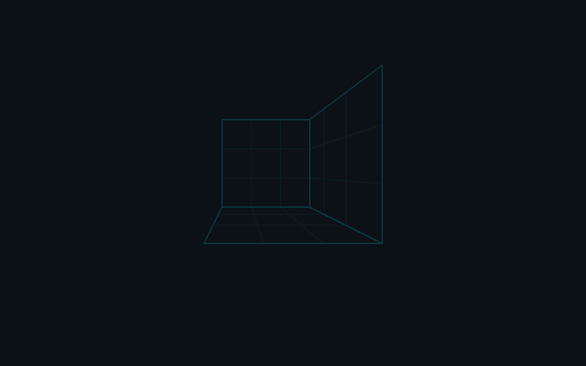
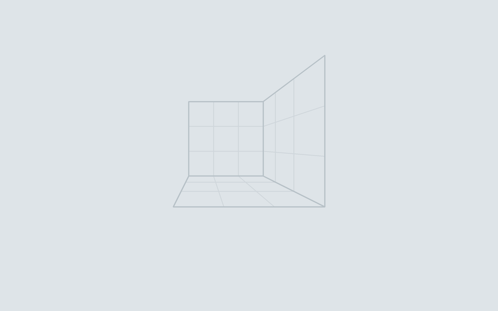
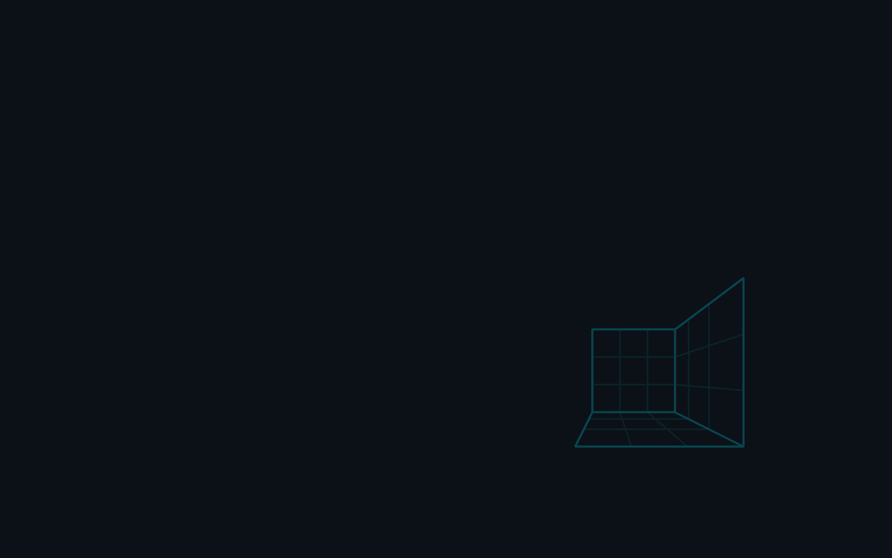
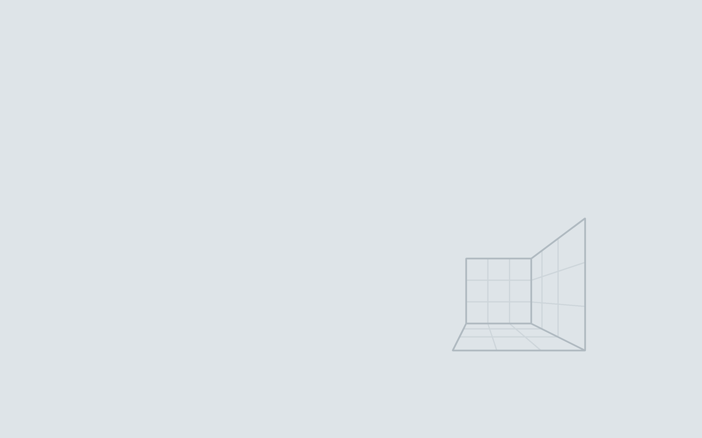
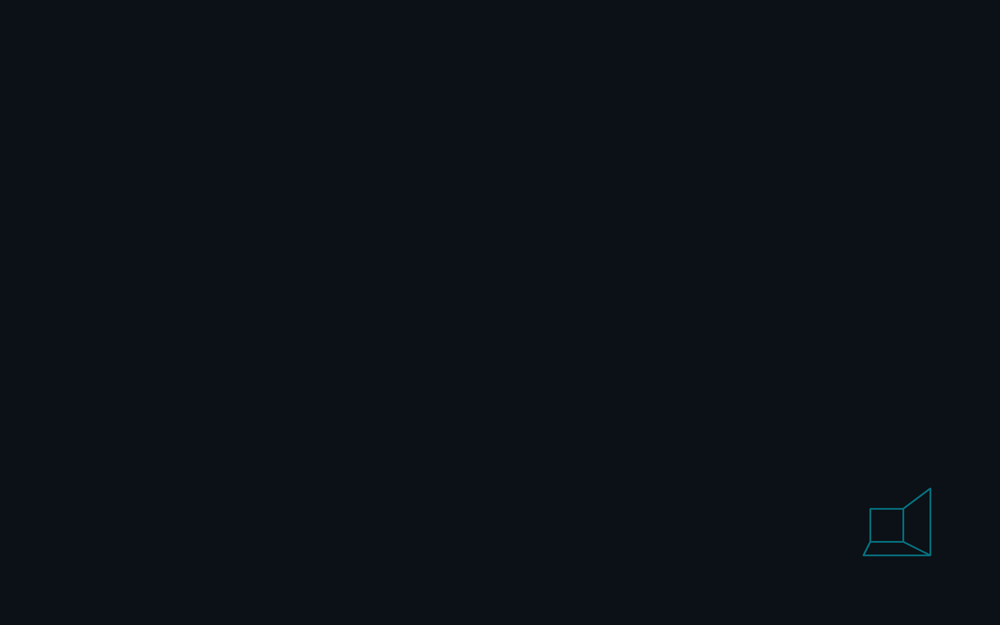
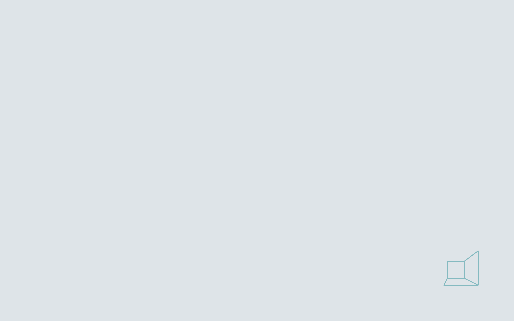

os
brand
Orchis-theme
tilingshell
CancelOpenDelete
Show hidden files Thumbnails ✓ Sort folders first
Copying 12 of 19 files · Show details
 CONSTRUCT
CONSTRUCT
~/construct $ task palette contrast: 13.94 ok dark text on view 7.52 ok dark text on selection ~/construct $ git log --oneline -2 19bf42d (HEAD -> main) Give the palette elevation 375a6b8 Name the fonts the desktop draws with ~/construct $
Files on the left and Ghostty on the right; the top bar and the dock are GNOME Shell with Orchis, dash-to-panel and Vitals: opaque, ringed, 6px from the edge, dark in both modes. The windows follow the mode. Dark: the body one step above the desktop, views one more, a 1px ring outside. Light: the window on the desk with its ring in the ink's hue, the sidebar a shelf below it, the selected place a white sheet. The selected folder is a tint, Open the one solid button, the entry the one ring.
Quick settings open with a password prompt, then the calendar. Toggles that are on are a tint with their icon on an accent disc; the focused toggle and the focused day carry the ring; today is accent text in bold, never a ring; the selected day is a tint. The prompt's Authenticate is the solid primary.
The ground is the boot's black, in both modes; the workspace, the desktop, is a card on it, lighter than what it stands on. The search entry is a menu surface: h and the ring.
Seven levels, strongest first. Each owns one channel no other uses: the mark's shape, a solid fill, a small full mark, a ring, an underline, a tint with no edge, a transient sub-tint. The left column is the shell, dark in both modes; the right is GTK in this mode. "See as" at the top shows the page as protanopia, deuteranopia and tritanopia see it (Machado 2009), on an IPS panel, on an OLED at 30%, at 30% backlight in a lit room, and in grey.
CONSTRUCTAuthenticate
Wired
Do Not Disturb
Show details
Not a rule: level 2 stays the solid accent (THEMING.md, "Primary is solid, in dark too"). Three renderings of the primary, each beside the selected state it must be told from, so the choice can be judged by eye. Under each: its label's contrast (4.5:1 is the floor) and its ΔE00 from the selected item (the P tier asks 30), as palette.py's contrast() and de00() give them for the palette of 2026-10-04; they are not recomputed when the palette changes.
Dark is the wireframe glowing on ink; light is the same room as a technical drawing, with no more cyan. The window stands on the desk with a ring in the ink's hue, the sidebar is a shelf below it, every line is the muted ink at an alpha, the headerbars' rules run as one line, and the selected place is a white sheet with its label in bold and only its icon in the accent. Drawn light whatever the mode.
The built-in panel, 2880 × 1800
Each level one step lighter on the ink scale; in dark the 1px ring makes the edge, since black shadows do not show on ink. In light the desk is the ground, the window and the sidebar step up from it with their lines, and the shadow is only depth.
Every pair task palette holds beyond contrast: CIEDE2000 as drawn and in eight views - an IPS panel, an OLED and an IPS at 30%, the three dichromacies, protan and deutan on IPS - against the floor of its tier. E: surfaces at an edge (3 / 2); R: a 1px line (6 / 4); S1: a state that persists (10 / 6); S2: a step under the pointer (3 / 2); K: hue that carries meaning (20 / 10, tritan 6); P: the primary against a selected item (30 / 24); D: an overlay quieter than a selection. A pair below its tier passes only through the line drawn between it. The worst view is in bold.
libadwaita's steps - control, surface, sheet, pill - and concentric corners: quick settings is its toggles' 22 plus its 18 of padding, 40.
Each pair is for one thing. The default is the identity: the boot's last frame held still. Quiet and mark are its calm forms, for long sessions: quiet the same drawing at a third of the level and without the glow, mark only the brand mark, low in the corner. Offset is functional: the room moved out of the window area, so windows stand on an empty field. Each of the three fails task wallpaper unless it is calmer than the default of its mode. Light draws the room in the ink's hue on the desk; only the mark keeps the accent.









| Repository | Takes | From |
|---|---|---|
| Orchis-theme | accent, its text, text, border and semantic colors per variant, the background scale, tints (rest, hover, active, decoration, track), selection, light's desk, shelf and lines, radii; the shell's levels (bars g, menus h, the ring); Activities icon | palette/construct.scss, logos/construct-activities.svg |
| Tela-icon-theme | folder and glyph color; the #549bff software family recolored | palette.toml (icons), recolored in the sources |
| Bibata_Cursor | Bibata-Modern-Construct and -Right | palette.toml (cursor), build.py's COLORS |
| dash-to-panel, tilingshell | the dock: #panel's color and the running dot from the shell theme; its focus highlight (the rest tint, 18%) and tilingshell's window-border-color (the accent: focus) | Orchis; dconf keys in the image's 00-construct |
| Vitals, caffeine, clipboard-indicator, appindicator, gsconnect | nothing of their own: the shell theme draws them | - |
| Ghostty | Construct Dark and Light | palette/ghostty/, seeded once by construct theme |
| VS Code | the built-in construct-theme extension | palette/vscode/ |
| The image | Plymouth's prompt and the mark's place, the harness's checks, the four wallpaper pairs | palette/construct.json, plymouth/sequence.json, wallpapers/ |
| libadwaita apps | the nearest fixed accent, for the portal and Settings' swatches | gnome.accent = teal |